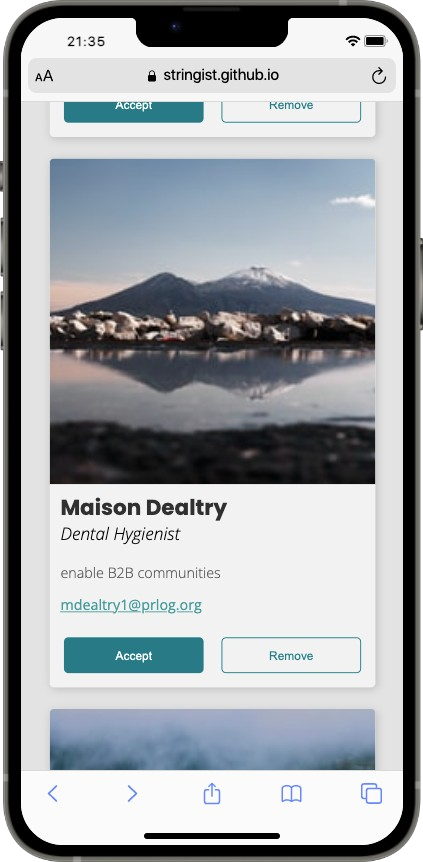

Fonts & UI Cards
My focus in this assignment was on finding display and body fonts that worked well together, and then seeing how the various effects of hierarchy, weight, color, and spacing could play together to produce a professional-looking card UI. The fonts used Poppins and Open sans.
Visit the page here ➔